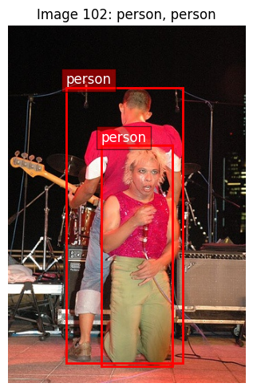
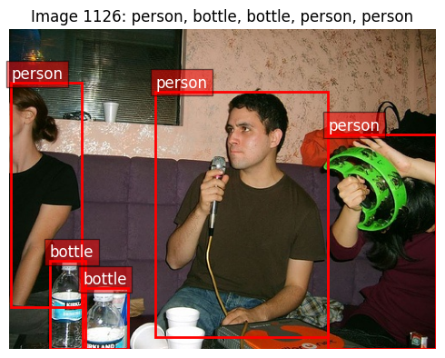
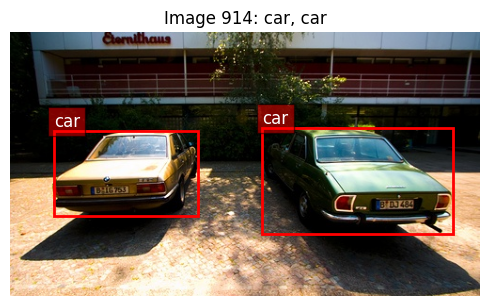
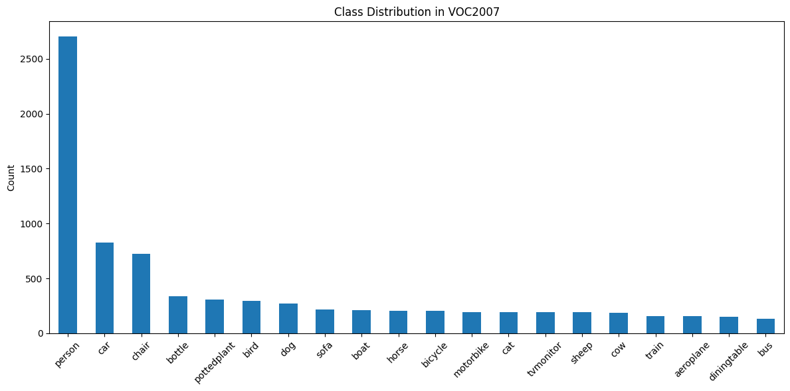
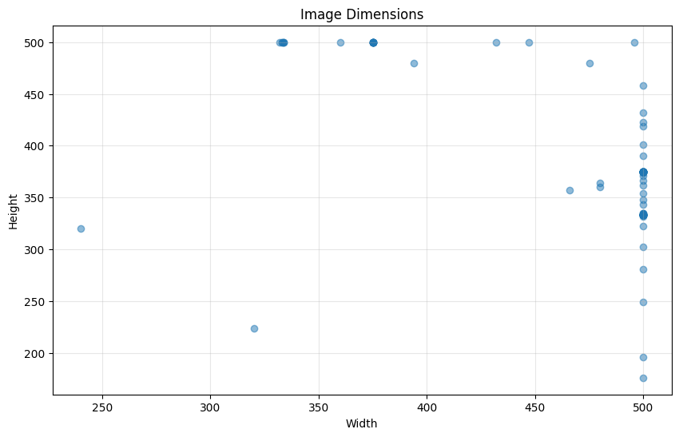
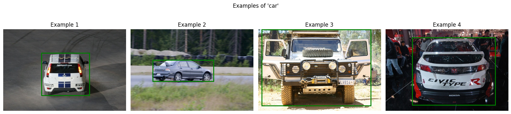
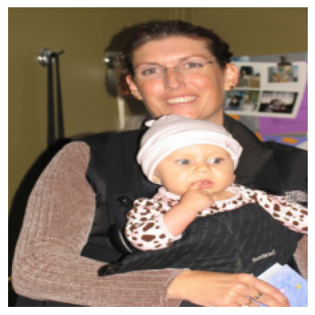
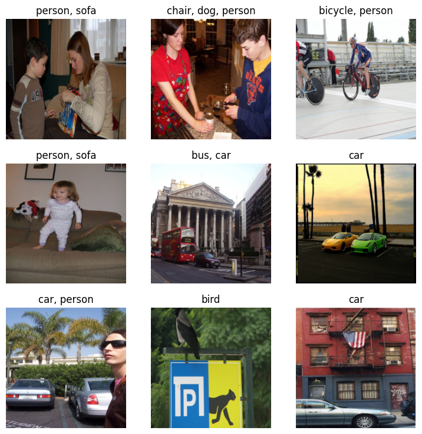
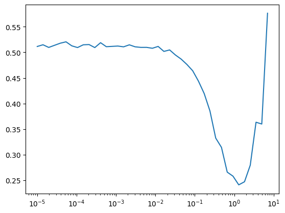

from minai import *
import torch
import torch.nn as nn
from datasets import load_dataset, load_dataset_builder
from torcheval.metrics import MulticlassAccuracy
import torchvision.transforms.v2.functional as TF
import torchvision.transforms as transforms
import torchvision.datasets as datasets
from torch.utils.data import DataLoader
from torchvision.transforms import v2
import fastcore.all as fc
import numpy as np
import matplotlib as mpl
import matplotlib.pyplot as plt
import pandas as pd
from fastcore.utils import L
from IPython.display import display, Image
from pilus_project.core import *
from pilus_project.darknet import *Darknet Detection
PASCAL VOC2007
Data
Data loading
set_seed(42)Let’s take a look at VOC2007.
VOC_CLASSES = L(['aeroplane', 'bicycle', 'bird', 'boat', 'bottle', 'bus', 'car', 'cat',
'chair', 'cow', 'diningtable', 'dog', 'horse', 'motorbike', 'person',
'pottedplant', 'sheep', 'sofa', 'train', 'tvmonitor'])data_path = fc.Path.home()/'data/'
data_path.ls()(#4) [Path('/home/galopy/data/VOCdevkit'),Path('/home/galopy/data/tiny-imagenet-200.zip'),Path('/home/galopy/data/VOCtrainval_06-Nov-2007.tar'),Path('/home/galopy/data/tiny-imagenet-200')]ds = datasets.VOCDetection(root=data_path, year='2007', image_set='train', download=False)
dsDataset VOCDetection
Number of datapoints: 2501
Root location: /home/galopy/dataChecking out data
What’s in the data?
ds[0](<PIL.Image.Image image mode=RGB size=500x333>,
{'annotation': {'folder': 'VOC2007',
'filename': '000012.jpg',
'source': {'database': 'The VOC2007 Database',
'annotation': 'PASCAL VOC2007',
'image': 'flickr',
'flickrid': '207539885'},
'owner': {'flickrid': 'KevBow', 'name': '?'},
'size': {'width': '500', 'height': '333', 'depth': '3'},
'segmented': '0',
'object': [{'name': 'car',
'pose': 'Rear',
'truncated': '0',
'difficult': '0',
'bndbox': {'xmin': '156', 'ymin': '97', 'xmax': '351', 'ymax': '270'}}]}})def show_voc_sample(ds, idx, figsize=(12,10)):
img, target = ds[idx]
objects = target['annotation']['object']
img_array = np.array(img)
fig, ax = plt.subplots(figsize=figsize)
ax.imshow(img_array)
width = int(target['annotation']['size']['width'])
height = int(target['annotation']['size']['height'])
for obj in objects:
bbox = obj['bndbox']
xmin = int(bbox['xmin'])
ymin = int(bbox['ymin'])
xmax = int(bbox['xmax'])
ymax = int(bbox['ymax'])
rect = plt.Rectangle((xmin, ymin), xmax-xmin, ymax-ymin,
fill=False, edgecolor='red', linewidth=2)
ax.add_patch(rect)
ax.text(xmin, ymin-5, obj['name'],
bbox=dict(facecolor='red', alpha=0.5), fontsize=12, color='white')
ax.set_title(f"Image {idx}: {', '.join([obj['name'] for obj in objects])}")
ax.axis('off')
plt.tight_layout()
plt.show()
print(f"Image size: {width}x{height}")
print(f"Number of objects: {len(objects)}")
for i, obj in enumerate(objects):
print(f"Object {i+1}: {obj['name']}, Difficult: {obj['difficult']}, Truncated: {obj['truncated']}")set_seed(42)
import random
random_indices = random.sample(range(len(ds)), 5)
for idx in random_indices:
show_voc_sample(ds, idx, figsize=(5,5))Image size: 500x333
Number of objects: 1
Object 1: aeroplane, Difficult: 0, Truncated: 0
Image size: 332x500
Number of objects: 2
Object 1: person, Difficult: 0, Truncated: 0
Object 2: person, Difficult: 0, Truncated: 0
Image size: 500x375
Number of objects: 5
Object 1: person, Difficult: 0, Truncated: 1
Object 2: bottle, Difficult: 0, Truncated: 1
Object 3: bottle, Difficult: 0, Truncated: 1
Object 4: person, Difficult: 0, Truncated: 1
Object 5: person, Difficult: 0, Truncated: 1Image size: 500x333
Number of objects: 1
Object 1: tvmonitor, Difficult: 0, Truncated: 0
Image size: 500x281
Number of objects: 2
Object 1: car, Difficult: 0, Truncated: 0
Object 2: car, Difficult: 0, Truncated: 0def get_class_distribution(ds):
"Get distribution of classes in the dataset"
counts = {}
for i in range(len(ds)):
img, target = ds[i]
for obj in target['annotation']['object']:
cls = obj['name']
counts[cls] = counts.get(cls, 0) + 1
return pd.Series(counts).sort_values(ascending=False)class_dist = get_class_distribution(ds)
plt.figure(figsize=(12, 6))
class_dist.plot(kind='bar')
plt.title('Class Distribution in VOC2007')
plt.ylabel('Count')
plt.xticks(rotation=45)
plt.tight_layout()
def get_image_sizes(ds, n=100):
"Get distribution of image sizes in the dataset"
sizes = []
for i in range(min(n, len(ds))):
img, _ = ds[i]
sizes.append(img.size)
return pd.DataFrame(sizes, columns=['width', 'height'])sizes = get_image_sizes(ds)
plt.figure(figsize=(10, 6))
plt.scatter(sizes['width'], sizes['height'], alpha=0.5)
plt.title('Image Dimensions')
plt.xlabel('Width')
plt.ylabel('Height')
plt.grid(True, alpha=0.3)
def show_class_examples(ds, class_name, n=4):
"Show examples of a specific class"
examples = []
for i in range(len(ds)):
img, target = ds[i]
if any(obj['name'] == class_name for obj in target['annotation']['object']):
examples.append((img, target))
if len(examples) >= n: break
fig, axes = subplots(1, n, figsize=(n*4, 4))
for i, (img, target) in enumerate(examples):
axes[i].imshow(img)
axes[i].set_title(f"Example {i+1}")
axes[i].axis('off')
for obj in target['annotation']['object']:
if obj['name'] == class_name:
bbox = obj['bndbox']
x1, y1 = int(bbox['xmin']), int(bbox['ymin'])
x2, y2 = int(bbox['xmax']), int(bbox['ymax'])
rect = plt.Rectangle((x1, y1), x2-x1, y2-y1,
fill=False, edgecolor='green', linewidth=2)
axes[i].add_patch(rect)
plt.suptitle(f"Examples of '{class_name}'")
plt.tight_layout()
return figshow_class_examples(ds, 'car');
objects_per_image = [len(ds[i][1]['annotation']['object']) for i in range(len(ds))]
plt.figure(figsize=(10, 6))
plt.hist(objects_per_image, bins=10)
plt.title('Objects per Image')
plt.xlabel('Number of Objects')
plt.ylabel('Number of Images')Text(0, 0.5, 'Number of Images')
def calculate_dataset_stats(dataloader, max_images=None):
"""Calculate mean and std of a dataset using a dataloader.
Args:
dataloader: DataLoader instance
max_images: Maximum number of images to use (None = use all)
Returns:
mean and std per channel
"""
# Create running sums
channel_sum = torch.zeros(3)
channel_sum_squared = torch.zeros(3)
num_pixels = 0
# Use tqdm for progress bar
from tqdm.auto import tqdm
for i, (images, _) in enumerate(tqdm(dataloader)):
if max_images is not None and i*dataloader.batch_size >= max_images:
break
# Make sure images are in the right format
if not isinstance(images, torch.Tensor):
continue
# Reshape: [B, C, H, W] -> [B, C, H*W]
b, c, h, w = images.shape
images = images.reshape(b, c, -1)
# Update sums
channel_sum += images.sum(dim=[0, 2])
channel_sum_squared += (images**2).sum(dim=[0, 2])
num_pixels += b * h * w
# Calculate mean and std
mean = channel_sum / num_pixels
std = torch.sqrt((channel_sum_squared / num_pixels) - (mean**2))
return mean, std
# Create a simple dataloader without normalization for calculation
def get_stats_dataloader(data_path, bs=32, year='2007'):
"""Create a dataloader for calculating dataset statistics"""
# Basic transforms without normalization
basic_tfms = v2.Compose([
v2.Resize(256),
v2.CenterCrop(224),
v2.ToImage(),
v2.ToDtype(torch.float32, scale=True) # Scales to [0, 1]
])
# Create dataset with basic transforms
ds = datasets.VOCDetection(
root=data_path,
year=year,
image_set='train',
download=False,
transform=basic_tfms
)
# Create a dataloader with a simple collate function that only returns images
def simple_collate(batch): return torch.stack([item[0] for item in batch]), None
return DataLoader(ds, batch_size=bs, shuffle=False,
collate_fn=simple_collate, num_workers=4)stats_dl = get_stats_dataloader(data_path, bs=32)
mean, std = calculate_dataset_stats(stats_dl, max_images=2500)
print(f"Dataset mean: {mean.tolist()}")
print(f"Dataset std: {std.tolist()}")Dataset mean: [0.45178133249282837, 0.4230543076992035, 0.39004892110824585]
Dataset std: [0.26676368713378906, 0.261764258146286, 0.2731017470359802]Dataset
We create pytorch dataset.
from torch.utils.data import default_collate
from operator import attrgetter, itemgetterPytorch has options to add transforms to its dataset, so this is like minai’s TfmDataset.
def create_voc_datasets(data_path, train_tfms=None, valid_tfms=None, year='2007'):
"Create training and validation datasets for VOC"
if train_tfms is None:
train_tfms = v2.Compose([
v2.RandomResizedCrop(224),
v2.RandomHorizontalFlip(),
v2.ToImage(),
v2.ToDtype(torch.float32, scale=True),
v2.Normalize(mean=[0.485, 0.456, 0.406], std=[0.229, 0.224, 0.225])
])
if valid_tfms is None:
valid_tfms = v2.Compose([
v2.Resize(256),
v2.CenterCrop(224),
v2.ToImage(),
v2.ToDtype(torch.float32, scale=True),
v2.Normalize(mean=[0.485, 0.456, 0.406], std=[0.229, 0.224, 0.225])
])
train_ds = datasets.VOCDetection(root=data_path, year=year, image_set='train', download=False,
transform=train_tfms)
valid_ds = datasets.VOCDetection(root=data_path, year=year, image_set='val', download=False,
transform=valid_tfms)
return train_ds, valid_dstrn_ds, val_ds = create_voc_datasets(data_path)
trn_dsDataset VOCDetection
Number of datapoints: 2501
Root location: /home/galopy/data
StandardTransform
Transform: Compose(
RandomResizedCrop(size=(224, 224), scale=(0.08, 1.0), ratio=(0.75, 1.3333333333333333), interpolation=InterpolationMode.BILINEAR, antialias=True)
RandomHorizontalFlip(p=0.5)
ToImage()
ToDtype(scale=True)
Normalize(mean=[0.485, 0.456, 0.406], std=[0.229, 0.224, 0.225], inplace=False)
)The target has many more information than we need. We only need annotation.object’s names for classification purposes.
trn_ds[0](Image([[[-0.9192, -0.9534, -0.9020, ..., -1.0048, -0.9705, -1.0048],
[-0.9192, -0.9363, -0.8849, ..., -1.0048, -0.9877, -0.9705],
[-0.9192, -0.9192, -0.9192, ..., -0.9020, -0.9363, -0.9192],
...,
[-0.8849, -0.8164, -0.8335, ..., -0.6623, -0.6794, -0.6794],
[-0.9020, -0.7993, -0.8335, ..., -0.6794, -0.7137, -0.6452],
[-0.8507, -0.8507, -0.8164, ..., -0.6452, -0.6623, -0.6109]],
[[-0.8102, -0.8452, -0.7927, ..., -0.8803, -0.8452, -0.8803],
[-0.8102, -0.8277, -0.7752, ..., -0.8803, -0.8627, -0.8452],
[-0.8102, -0.8102, -0.8102, ..., -0.7752, -0.8102, -0.7927],
...,
[-0.7402, -0.6702, -0.6877, ..., -0.5476, -0.5651, -0.5651],
[-0.7577, -0.6527, -0.6877, ..., -0.5651, -0.6001, -0.5301],
[-0.7052, -0.7052, -0.6702, ..., -0.5301, -0.5476, -0.4951]],
[[-0.5495, -0.5844, -0.5321, ..., -0.6193, -0.5844, -0.6193],
[-0.5495, -0.5670, -0.5147, ..., -0.6193, -0.6018, -0.5844],
[-0.5495, -0.5495, -0.5495, ..., -0.5147, -0.5495, -0.5321],
...,
[-0.5321, -0.4624, -0.4798, ..., -0.3230, -0.3404, -0.3404],
[-0.5495, -0.4450, -0.4798, ..., -0.3404, -0.3753, -0.3055],
[-0.4973, -0.4973, -0.4624, ..., -0.3055, -0.3230, -0.2707]]], ),
{'annotation': {'folder': 'VOC2007',
'filename': '000012.jpg',
'source': {'database': 'The VOC2007 Database',
'annotation': 'PASCAL VOC2007',
'image': 'flickr',
'flickrid': '207539885'},
'owner': {'flickrid': 'KevBow', 'name': '?'},
'size': {'width': '500', 'height': '333', 'depth': '3'},
'segmented': '0',
'object': [{'name': 'car',
'pose': 'Rear',
'truncated': '0',
'difficult': '0',
'bndbox': {'xmin': '156', 'ymin': '97', 'xmax': '351', 'ymax': '270'}}]}})With voc_extract, we can get any field we want from the target.
def voc_extract(field='name'):
"""Create a function that extracts a specific field from VOC annotations"""
def _extract(targ):
return L(fc.nested_attr(targ, 'annotation.object')).itemgot(field)
return _extractObject name:
ds = datasets.VOCDetection(
root=data_path, year="2007", image_set='train', download=False,
target_transform=voc_extract())
ds[0](<PIL.Image.Image image mode=RGB size=500x333>, (#1) ['car'])Bound box:
ds = datasets.VOCDetection(
root=data_path, year="2007", image_set='train', download=False,
target_transform=voc_extract(field='bndbox'))
ds[0](<PIL.Image.Image image mode=RGB size=500x333>,
(#1) [{'xmin': '156', 'ymin': '97', 'xmax': '351', 'ymax': '270'}])For training, we actually need one-hot encoded vector because the targets are multi-labels.
VOC_CLASSES(#20) ['aeroplane','bicycle','bird','boat','bottle','bus','car','cat','chair','cow','diningtable','dog','horse','motorbike','person','pottedplant','sheep','sofa','train','tvmonitor']names = ['car', 'dog']
names['car', 'dog']lbls = torch.zeros(len(VOC_CLASSES))
lblstensor([0., 0., 0., 0., 0., 0., 0., 0., 0., 0., 0., 0., 0., 0., 0., 0., 0., 0., 0., 0.])torch.scatter is a good way to do this:
onehot = lbls.scatter(0, torch.tensor([1,3,5]), 1)
onehottensor([0., 1., 0., 1., 0., 1., 0., 0., 0., 0., 0., 0., 0., 0., 0., 0., 0., 0.,
0., 0.])from torch import tensordef onehot_tfm(targ, clss=VOC_CLASSES):
get = voc_extract(field='name')
names = get(targ)
one_hot = torch.zeros(len(clss))
idxs = tensor([clss.index(n) for n in names])
one_hot.scatter_(0, idxs, 1)
return one_hotds = datasets.VOCDetection(
root=data_path, year="2007", image_set='train', download=False,
target_transform=onehot_tfm)
ds[0](<PIL.Image.Image image mode=RGB size=500x333>,
tensor([0., 0., 0., 0., 0., 0., 1., 0., 0., 0., 0., 0., 0., 0., 0., 0., 0., 0.,
0., 0.]))How about going back to label from one hot encoding? We use np.where. Why use numpy instead of pytorch? Because rvs_onehot_tfm is used for displaying images. We will never use this during training.
onehottensor([0., 1., 0., 1., 0., 1., 0., 0., 0., 0., 0., 0., 0., 0., 0., 0., 0., 0.,
0., 0.])np.where(onehot == 1)[0]array([1, 3, 5])VOC_CLASSES[np.where(onehot == 1)[0]](#3) ['bicycle','boat','bus']def _rvs_onehot_tfm(onehot): return VOC_CLASSES[np.where(onehot == 1)[0]]_rvs_onehot_tfm(onehot)(#3) ['bicycle','boat','bus']DataLoader
We got the dataset, so we are ready to create a dataloader. There are couple transformations we want to apply to images. We have images so far, but we need pytorch tensors with the same image sizes. We also normalize images.
to_tensor = v2.Compose([
v2.Resize((224, 224)),
v2.ToImage(),
v2.ToDtype(torch.float32, scale=True),
v2.Normalize(mean=[0.485, 0.456, 0.406], std=[0.229, 0.224, 0.225])
])trn_ds = datasets.VOCDetection(
root=data_path, year="2007", image_set='train', download=False,
transform=to_tensor, target_transform=onehot_tfm)
val_ds = datasets.VOCDetection(
root=data_path, year="2007", image_set='val', download=False,
transform=to_tensor, target_transform=onehot_tfm)bs = 64
trn_dl, val_dl = get_dls(trn_ds, val_ds, bs=bs)xb,yb = next(iter(trn_dl))
xb.shape,yb[:10](torch.Size([64, 3, 224, 224]),
tensor([[0., 0., 0., 0., 0., 0., 0., 0., 0., 0., 0., 0., 0., 0., 1., 0., 0., 0.,
0., 0.],
[0., 0., 0., 0., 0., 0., 0., 0., 1., 0., 0., 0., 0., 0., 1., 0., 0., 0.,
0., 0.],
[0., 0., 1., 0., 0., 0., 0., 0., 0., 0., 0., 0., 0., 0., 0., 0., 0., 0.,
0., 0.],
[0., 0., 0., 0., 0., 0., 0., 0., 0., 0., 0., 1., 0., 0., 1., 0., 0., 1.,
0., 0.],
[0., 0., 0., 0., 0., 0., 0., 0., 1., 0., 1., 0., 0., 0., 0., 0., 0., 0.,
0., 0.],
[0., 0., 0., 0., 0., 0., 1., 0., 0., 0., 0., 0., 0., 0., 1., 0., 0., 0.,
0., 0.],
[0., 0., 0., 0., 0., 0., 0., 0., 0., 0., 0., 0., 0., 0., 0., 0., 0., 0.,
1., 0.],
[0., 0., 0., 0., 1., 0., 0., 0., 0., 0., 0., 0., 0., 0., 1., 0., 0., 0.,
0., 0.],
[0., 0., 0., 0., 0., 0., 0., 0., 0., 0., 0., 0., 0., 0., 0., 0., 1., 0.,
0., 0.],
[0., 0., 0., 0., 0., 0., 0., 1., 0., 0., 0., 0., 0., 0., 0., 0., 0., 0.,
0., 1.]]))Denormalize image before display
from torch import tensor
xmean,xstd = (tensor([0.485, 0.456, 0.406]), tensor([0.229, 0.224, 0.225]))def denorm(x): return (x*xstd[:,None,None]+xmean[:,None,None]).clip(0,1)show_image(denorm(xb[0]));
def get_classification_model(num_classes=len(VOC_CLASSES)):
"Create a multi-label classification model based on darknet19"
backbone = get_darknet19()
model = nn.Sequential(
backbone,
nn.AdaptiveAvgPool2d(1),
nn.Flatten(),
nn.Linear(1024, 512),
nn.ReLU(inplace=True),
nn.Dropout(0.5),
nn.Linear(512, num_classes)
)
return modelnn.BCEWithLogitsLoss?model = get_classification_model()
dls = DataLoaders(trn_dl, val_dl)
learn = TrainLearner(model, dls, nn.BCEWithLogitsLoss(), lr=1e-3,
cbs=[TrainCB(), DeviceCB(), ProgressCB(), MetricsCB()])
learn.summary()
0.00% [0/1 00:00<?]
0.00% [0/40 00:00<?]
Tot params: 20359636; MFLOPS: 970.9| Module | Input | Output | Num params | MFLOPS |
|---|---|---|---|---|
| Sequential | (64, 3, 224, 224) | (64, 1024, 7, 7) | 19824576 | 970.4 |
| AdaptiveAvgPool2d | (64, 1024, 7, 7) | (64, 1024, 1, 1) | 0 | 0.0 |
| Flatten | (64, 1024, 1, 1) | (64, 1024) | 0 | 0.0 |
| Linear | (64, 1024) | (64, 512) | 524800 | 0.5 |
| ReLU | (64, 512) | (64, 512) | 0 | 0.0 |
| Dropout | (64, 512) | (64, 512) | 0 | 0.0 |
| Linear | (64, 512) | (64, 20) | 10260 | 0.0 |
@fc.patch
@fc.delegates(show_images)
def show_image_batch(self:Learner, max_n=9, cbs=None, tfm_x=None, tfm_y=None, **kwargs):
self.fit(1, cbs=[SingleBatchCB()]+fc.L(cbs))
xb,yb = to_cpu(self.batch)
feat = fc.nested_attr(self.dls, 'train.dataset.features')
if feat is None: titles = np.array(to_cpu(yb)) # when fitting, yb is in GPU
else:
names = feat['label'].names
titles = [names[i] for i in yb]
xb = tfm_x(xb[:max_n]) if tfm_x else xb[:max_n]
titles = tfm_y(titles[:max_n]) if tfm_y else titles[:max_n]
show_images(xb, titles=titles, **kwargs)We also have to reverse the transform for the targets. It is in onehot encoding, but we want class names.
ybtensor([[0., 0., 0., ..., 0., 0., 0.],
[0., 0., 0., ..., 0., 0., 0.],
[0., 0., 1., ..., 0., 0., 0.],
...,
[0., 0., 1., ..., 0., 0., 0.],
[0., 0., 0., ..., 1., 0., 0.],
[0., 0., 0., ..., 0., 0., 0.]])[', '.join(_rvs_onehot_tfm(y)) for y in np.array(yb)][:4]['person', 'chair, person', 'bird', 'dog, person, sofa']def rvs_onehot_tfm(yb): return [', '.join(_rvs_onehot_tfm(y)) for y in np.array(yb)]learn.show_image_batch(tfm_x=denorm, tfm_y=rvs_onehot_tfm)
0.00% [0/1 00:00<?]
0.00% [0/40 00:00<?]

learn.lr_find(gamma=1.4, max_mult=2)
10.00% [1/10 00:13<02:04]
| loss | epoch | train | time |
|---|---|---|---|
| 0.455 | 0 | train | 00:13 |
0.00% [0/40 00:00<?]

Training Classification
import torch.nn.functional as Fmodel = get_classification_model()
learn = TrainLearner(model, dls, multi_label_loss, lr=1e-1,
cbs=[TrainCB(), DeviceCB(), ProgressCB(), MetricsCB()])learn.summary()
0.00% [0/1 00:00<?]
0.00% [0/40 00:00<?]
Tot params: 20359636; MFLOPS: 970.9| Module | Input | Output | Num params | MFLOPS |
|---|---|---|---|---|
| Sequential | (64, 3, 224, 224) | (64, 1024, 7, 7) | 19824576 | 970.4 |
| AdaptiveAvgPool2d | (64, 1024, 7, 7) | (64, 1024, 1, 1) | 0 | 0.0 |
| Flatten | (64, 1024, 1, 1) | (64, 1024) | 0 | 0.0 |
| Linear | (64, 1024) | (64, 512) | 524800 | 0.5 |
| ReLU | (64, 512) | (64, 512) | 0 | 0.0 |
| Dropout | (64, 512) | (64, 512) | 0 | 0.0 |
| Linear | (64, 512) | (64, 20) | 10260 | 0.0 |
model = get_classification_model()
learn = TrainLearner(model, dls, multi_label_loss, lr=1e-1,
cbs=[DeviceCB(), ProgressCB(), MetricsCB()])
learn.fit(3)| loss | epoch | train | time |
|---|---|---|---|
| 0.371 | 0 | train | 00:13 |
| 0.261 | 0 | eval | 00:54 |
| 0.248 | 1 | train | 00:13 |
| 0.237 | 1 | eval | 00:11 |
| 0.241 | 2 | train | 00:13 |
| 0.237 | 2 | eval | 00:11 |
class TopKAccuracy(Callback):
def __init__(self, k_values=[1, 5], class_names=VOC_CLASSES):
"""
Implements Top-K accuracy for multi-label classification
Args:
k_values: List of k values to compute (e.g., [1, 5] for top-1 and top-5)
class_names: List of class names
"""
self.k_values = sorted(k_values)
self.max_k = max(k_values)
self.class_names = class_names
def before_fit(self, learn):
self.learn = learn
def before_epoch(self, learn):
# Initialize counters for each k
self.correct = {k: 0 for k in self.k_values}
self.total = 0
def after_batch(self, learn):
# Get predictions and targets
logits = to_cpu(learn.preds)
targets = to_cpu(learn.batch[1])
batch_size = targets.size(0)
# For each image in the batch
for i in range(batch_size):
# Get ground truth classes for this image
true_classes = torch.where(targets[i] == 1)[0]
if len(true_classes) == 0:
continue # Skip images with no labels
# Get top-k predicted classes
_, top_indices = torch.topk(logits[i], min(self.max_k, len(self.class_names)))
# Check if any true class is in top-k predictions
for k in self.k_values:
top_k_indices = top_indices[:k]
# For multi-label: if any true class is in top-k predictions, count as correct
if any(cls in top_k_indices for cls in true_classes):
self.correct[k] += 1
self.total += 1
def after_epoch(self, learn):
phase = 'train' if learn.training else 'valid'
for k in self.k_values:
accuracy = self.correct[k] / self.total if self.total > 0 else 0
print(f"{phase} top-{k} accuracy: {accuracy:.4f}")# Alternative implementation that considers a prediction correct only if
# all true classes are in the top-k predictions
class StrictTopKAccuracy(Callback):
def __init__(self, k_values=[1, 5], class_names=VOC_CLASSES):
self.k_values = sorted(k_values)
self.max_k = max(k_values)
self.class_names = class_names
def before_fit(self, learn):
self.learn = learn
def before_epoch(self, learn):
self.correct = {k: 0 for k in self.k_values}
self.total = 0
def after_batch(self, learn):
logits = to_cpu(learn.preds)
targets = to_cpu(learn.batch[1])
batch_size = targets.size(0)
for i in range(batch_size):
true_classes = torch.where(targets[i] == 1)[0]
if len(true_classes) == 0:
continue
_, top_indices = torch.topk(logits[i], min(self.max_k, len(self.class_names)))
for k in self.k_values:
if k < len(true_classes):
continue # Can't fit all true classes in top-k if k < number of true classes
top_k_indices = set(top_indices[:k].tolist())
true_classes_set = set(true_classes.tolist())
# Strict version: all true classes must be in top-k predictions
if true_classes_set.issubset(top_k_indices):
self.correct[k] += 1
self.total += 1
def after_epoch(self, learn):
phase = 'train' if learn.training else 'valid'
for k in self.k_values:
accuracy = self.correct[k] / self.total if self.total > 0 else 0
print(f"{phase} strict top-{k} accuracy: {accuracy:.4f}")from torcheval.metrics import TopKMultilabelAccuracy
from torcheval.metrics import MultilabelAccuracymodel = get_classification_model()
learn = TrainLearner(model, dls, multi_label_loss, lr=1e-1,
cbs=[DeviceCB(), ProgressCB(), MetricsCB(top5=TopKMultilabelAccuracy(k=5)),
TopKAccuracy(k_values=[1, 5])])learn.fit(3)
66.67% [2/3 00:49<00:24]
| top5 | loss | epoch | train | time |
|---|---|---|---|---|
| 0.000 | 0.374 | 0 | train | 00:13 |
| 0.000 | 0.265 | 0 | eval | 00:11 |
| 0.000 | 0.247 | 1 | train | 00:13 |
| 0.000 | 0.238 | 1 | eval | 00:11 |
| 0.000 | 0.240 | 2 | train | 00:13 |
50.00% [10/20 00:05<00:05 0.240]
train top-1 accuracy: 0.3631
train top-5 accuracy: 0.6234
valid top-1 accuracy: 0.4084
valid top-5 accuracy: 0.6657
train top-1 accuracy: 0.4266
train top-5 accuracy: 0.6745
valid top-1 accuracy: 0.4084
valid top-5 accuracy: 0.7032
train top-1 accuracy: 0.4314
train top-5 accuracy: 0.7245--------------------------------------------------------------------------- KeyboardInterrupt Traceback (most recent call last) Cell In[75], line 1 ----> 1 learn.fit(3) File ~/git/minai/minai/core.py:260, in Learner.fit(self, n_epochs, train, valid, cbs, lr) 258 if lr is None: lr = self.lr 259 if self.opt_func: self.opt = self.opt_func(self.model.parameters(), lr) --> 260 self._fit(train, valid) 261 finally: 262 for cb in cbs: self.cbs.remove(cb) File ~/git/minai/minai/core.py:194, in with_cbs.__call__.<locals>._f(o, *args, **kwargs) 192 try: 193 o.callback(f'before_{self.nm}') --> 194 f(o, *args, **kwargs) 195 o.callback(f'after_{self.nm}') 196 except globals()[f'Cancel{self.nm.title()}Exception']: pass File ~/git/minai/minai/core.py:250, in Learner._fit(self, train, valid) 248 if train: self.one_epoch(True) 249 if valid: --> 250 with torch.inference_mode(): self.one_epoch(False) File ~/git/minai/minai/core.py:241, in Learner.one_epoch(self, training) 239 self.model.train(training) 240 self.dl = self.train_dl if training else self.dls.valid --> 241 self._one_epoch() File ~/git/minai/minai/core.py:194, in with_cbs.__call__.<locals>._f(o, *args, **kwargs) 192 try: 193 o.callback(f'before_{self.nm}') --> 194 f(o, *args, **kwargs) 195 o.callback(f'after_{self.nm}') 196 except globals()[f'Cancel{self.nm.title()}Exception']: pass File ~/git/minai/minai/core.py:236, in Learner._one_epoch(self) 234 @with_cbs('epoch') 235 def _one_epoch(self): --> 236 for self.iter,self.batch in enumerate(self.dl): self._one_batch() File ~/miniforge3/lib/python3.10/site-packages/fastprogress/fastprogress.py:41, in ProgressBar.__iter__(self) 39 if self.total != 0: self.update(0) 40 try: ---> 41 for i,o in enumerate(self.gen): 42 if self.total and i >= self.total: break 43 yield o File ~/miniforge3/lib/python3.10/site-packages/torch/utils/data/dataloader.py:701, in _BaseDataLoaderIter.__next__(self) 698 if self._sampler_iter is None: 699 # TODO(https://github.com/pytorch/pytorch/issues/76750) 700 self._reset() # type: ignore[call-arg] --> 701 data = self._next_data() 702 self._num_yielded += 1 703 if ( 704 self._dataset_kind == _DatasetKind.Iterable 705 and self._IterableDataset_len_called is not None 706 and self._num_yielded > self._IterableDataset_len_called 707 ): File ~/miniforge3/lib/python3.10/site-packages/torch/utils/data/dataloader.py:757, in _SingleProcessDataLoaderIter._next_data(self) 755 def _next_data(self): 756 index = self._next_index() # may raise StopIteration --> 757 data = self._dataset_fetcher.fetch(index) # may raise StopIteration 758 if self._pin_memory: 759 data = _utils.pin_memory.pin_memory(data, self._pin_memory_device) File ~/miniforge3/lib/python3.10/site-packages/torch/utils/data/_utils/fetch.py:52, in _MapDatasetFetcher.fetch(self, possibly_batched_index) 50 data = self.dataset.__getitems__(possibly_batched_index) 51 else: ---> 52 data = [self.dataset[idx] for idx in possibly_batched_index] 53 else: 54 data = self.dataset[possibly_batched_index] File ~/miniforge3/lib/python3.10/site-packages/torch/utils/data/_utils/fetch.py:52, in <listcomp>(.0) 50 data = self.dataset.__getitems__(possibly_batched_index) 51 else: ---> 52 data = [self.dataset[idx] for idx in possibly_batched_index] 53 else: 54 data = self.dataset[possibly_batched_index] File ~/miniforge3/lib/python3.10/site-packages/torchvision/datasets/voc.py:201, in VOCDetection.__getitem__(self, index) 193 """ 194 Args: 195 index (int): Index (...) 198 tuple: (image, target) where target is a dictionary of the XML tree. 199 """ 200 img = Image.open(self.images[index]).convert("RGB") --> 201 target = self.parse_voc_xml(ET_parse(self.annotations[index]).getroot()) 203 if self.transforms is not None: 204 img, target = self.transforms(img, target) File ~/miniforge3/lib/python3.10/site-packages/defusedxml/common.py:100, in _generate_etree_functions.<locals>.parse(source, parser, forbid_dtd, forbid_entities, forbid_external) 93 if parser is None: 94 parser = DefusedXMLParser( 95 target=_TreeBuilder(), 96 forbid_dtd=forbid_dtd, 97 forbid_entities=forbid_entities, 98 forbid_external=forbid_external, 99 ) --> 100 return _parse(source, parser) File ~/miniforge3/lib/python3.10/xml/etree/ElementTree.py:1222, in parse(source, parser) 1213 """Parse XML document into element tree. 1214 1215 *source* is a filename or file object containing XML data, (...) 1219 1220 """ 1221 tree = ElementTree() -> 1222 tree.parse(source, parser) 1223 return tree File ~/miniforge3/lib/python3.10/xml/etree/ElementTree.py:586, in ElementTree.parse(self, source, parser) 584 if not data: 585 break --> 586 parser.feed(data) 587 self._root = parser.close() 588 return self._root File ~/miniforge3/lib/python3.10/xml/etree/ElementTree.py:1713, in XMLParser.feed(self, data) 1711 """Feed encoded data to parser.""" 1712 try: -> 1713 self.parser.Parse(data, False) 1714 except self._error as v: 1715 self._raiseerror(v) File /home/conda/feedstock_root/build_artifacts/python-split_1687559129017/work/Modules/pyexpat.c:416, in StartElement() File ~/miniforge3/lib/python3.10/xml/etree/ElementTree.py:1641, in XMLParser._start(self, tag, attr_list) 1638 def _end_ns(self, prefix): 1639 return self.target.end_ns(prefix or '') -> 1641 def _start(self, tag, attr_list): 1642 # Handler for expat's StartElementHandler. Since ordered_attributes 1643 # is set, the attributes are reported as a list of alternating 1644 # attribute name,value. 1645 fixname = self._fixname 1646 tag = fixname(tag) KeyboardInterrupt:
model = get_classification_model()
learn = TrainLearner(model, dls, multi_label_loss, lr=1e-1,
cbs=[DeviceCB(), ProgressCB(),
MetricsCB(hamming=MultilabelAccuracy(criteria='hamming'), overlap=MultilabelAccuracy(criteria='overlap'), contain=MultilabelAccuracy(criteria='contain'), belong=MultilabelAccuracy(criteria='belong'),top1=MultilabelAccuracy(criteria='exact_match'), top5=TopKMultilabelAccuracy(criteria='contain', k=5), ),
TopKAccuracy(k_values=[1, 5]),
StrictTopKAccuracy(k_values=[1, 5])])learn.fit(5)| hamming | overlap | contain | belong | top1 | top5 | loss | epoch | train | time |
|---|---|---|---|---|---|---|---|---|---|
| 0.920 | 0.002 | 0.001 | 0.998 | 0.001 | 0.293 | 0.368 | 0 | train | 00:13 |
| 0.922 | 0.000 | 0.000 | 1.000 | 0.000 | 0.345 | 0.263 | 0 | eval | 00:11 |
| 0.920 | 0.013 | 0.004 | 0.986 | 0.004 | 0.354 | 0.248 | 1 | train | 00:13 |
| 0.924 | 0.130 | 0.027 | 0.910 | 0.027 | 0.385 | 0.238 | 1 | eval | 00:11 |
| 0.922 | 0.071 | 0.019 | 0.967 | 0.019 | 0.399 | 0.240 | 2 | train | 00:13 |
| 0.924 | 0.047 | 0.016 | 0.985 | 0.016 | 0.465 | 0.231 | 2 | eval | 00:11 |
| 0.922 | 0.083 | 0.023 | 0.968 | 0.023 | 0.452 | 0.234 | 3 | train | 00:13 |
| 0.926 | 0.140 | 0.032 | 0.924 | 0.032 | 0.509 | 0.226 | 3 | eval | 00:11 |
| 0.924 | 0.148 | 0.040 | 0.944 | 0.040 | 0.505 | 0.227 | 4 | train | 00:13 |
| 0.925 | 0.152 | 0.027 | 0.899 | 0.027 | 0.459 | 0.236 | 4 | eval | 00:11 |
train top-1 accuracy: 0.3790
train top-5 accuracy: 0.6062
train strict top-1 accuracy: 0.0736
train strict top-5 accuracy: 0.2931
valid top-1 accuracy: 0.4084
valid top-5 accuracy: 0.6876
valid strict top-1 accuracy: 0.0797
valid strict top-5 accuracy: 0.3450
train top-1 accuracy: 0.4290
train top-5 accuracy: 0.6833
train strict top-1 accuracy: 0.0840
train strict top-5 accuracy: 0.3543
valid top-1 accuracy: 0.4084
valid top-5 accuracy: 0.7016
valid strict top-1 accuracy: 0.0797
valid strict top-5 accuracy: 0.3849
train top-1 accuracy: 0.4306
train top-5 accuracy: 0.7169
train strict top-1 accuracy: 0.0868
train strict top-5 accuracy: 0.3986
valid top-1 accuracy: 0.4143
valid top-5 accuracy: 0.7622
valid strict top-1 accuracy: 0.0900
valid strict top-5 accuracy: 0.4649
train top-1 accuracy: 0.4350
train top-5 accuracy: 0.7533
train strict top-1 accuracy: 0.0996
train strict top-5 accuracy: 0.4518
valid top-1 accuracy: 0.4159
valid top-5 accuracy: 0.7837
valid strict top-1 accuracy: 0.0896
valid strict top-5 accuracy: 0.5092
train top-1 accuracy: 0.4514
train top-5 accuracy: 0.7841
train strict top-1 accuracy: 0.1132
train strict top-5 accuracy: 0.5050
valid top-1 accuracy: 0.4231
valid top-5 accuracy: 0.7490
valid strict top-1 accuracy: 0.1060
valid strict top-5 accuracy: 0.4594